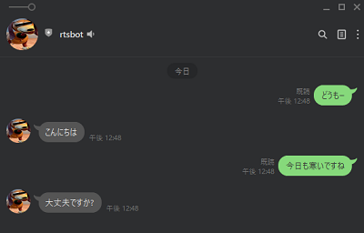
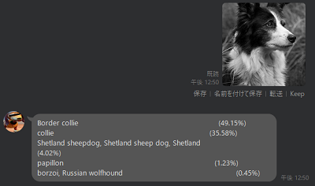
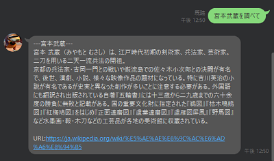
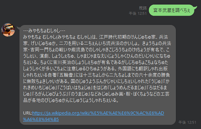

雑談
PyA3rt APIによる会話応答

画像分類
写真を送ると推論結果を返します。
(複数枚同時はできるけど遅いです。モデルはEfficientNet-B0)

Wiki検索, 滑舌変換
"●●を調べて"と書くことで●●のwiki検索結果を返します。
"●●を調べちぇ"と書くことで●●のwiki検索結果を滑舌悪く返します。
"●●を変換しちぇ"と書くことで●●を滑舌悪く返します。


Herokuの無料サーバーなので基本眠ってます。
立ち上がりのメッセージには応答しないかもしれません。
ID: @024jhjdy Name: rtsbot